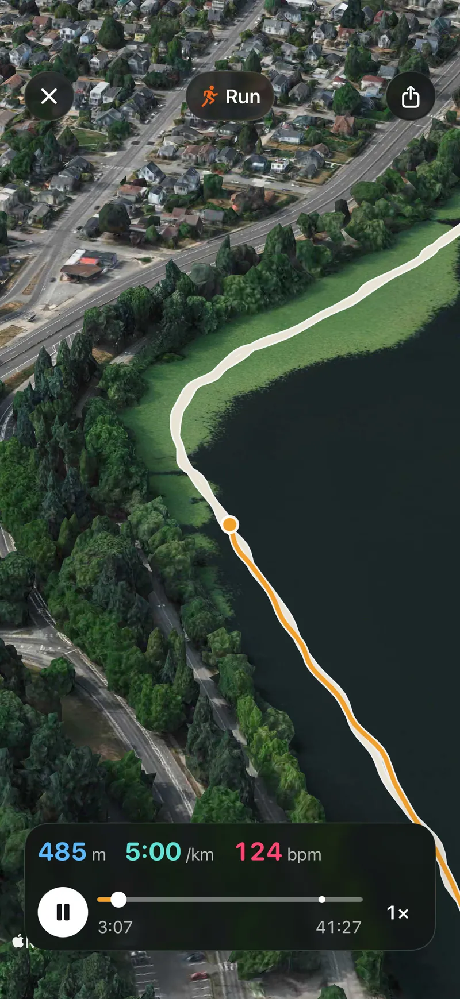
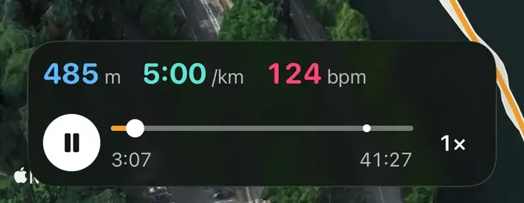

Ratgeber
Wenn zu deinem Lauf eine GPS-Route in Apple Health gespeichert ist, kannst du ihn auf dem iPhone in 3D noch einmal sehen. Die Karte kippt, die Kamera hebt ab und fliegt genau die Strecke nach, die du gelaufen bist: durch den Park, am Fluss entlang, den Hügel hinauf, den du zuletzt gegangen bist. Das funktioniert genauso mit Spaziergängen, Wanderungen und Radtouren, also mit jedem Training, zu dem eine Route gespeichert ist.
Dieser Ratgeber zeigt, was du dafür brauchst, wie du startest, wie daraus ein Video zum Teilen wird und was du davon nicht erwarten solltest.
Ein Lauf auf dem Laufband, eine Einheit auf dem Indoor-Rad oder Schwimmen im Becken hat keine Route und lässt sich deshalb nicht auf der Karte abspielen.

Die Kamera fliegt über Satellitenbild und Gelände und steigt vor Kurven ein Stück an, damit du siehst, wohin der Weg abbiegt. Unten laufen Distanz, Tempo und Herzfrequenz mit, beim Radfahren Geschwindigkeit statt Tempo. Tippst du auf einen der Werte, färbt sich die geflogene Strecke in dessen Farbe.
Wie aus einem Lauf ein kurzer Flug wird
Unterwegs hält der Flug an ein paar Stellen kurz an:
Über die Zeitleiste springst du jederzeit vor oder zurück, und du kannst auf doppelte Geschwindigkeit schalten. Ein längerer Lauf ist in etwa 45 Sekunden durchgeflogen, kürzere Strecken schneller, und jeder Halt bekommt einen eigenen Moment.
Aus dem Flyover kannst du ein Video zum Teilen machen. Der Teilen-Knopf führt zum Tab Reel, dort wählst du 15, 20 oder 30 Sekunden und tippst auf Reel exportieren. Aera sichert das Video in deinen Fotos, danach kannst du es direkt teilen, etwa per Nachricht oder als Story.
Gut zu wissen: Das Video ist im Hochformat 9:16 und folgt dir von oben auf dem Satellitenbild, mit laufender Distanz und den wichtigsten Werten. Es ist keine Bildschirmaufnahme des geneigten 3D-Flugs. In den letzten zweieinhalb Sekunden steht die Übersichtskarte des Trainings, die damit auch das Vorschaubild des Videos ist.
Der Flyover ist für jedes Training der letzten sieben Tage kostenlos. Ältere Trainings bleiben sichtbar, sie abzuspielen gehört aber zu Premium. Ein Konto brauchst du nicht.
Der Flug ist nur so genau wie das GPS, das den Track aufgezeichnet hat.

Der Flug in AeraUnten laufen Distanz, Tempo und Puls mit. Auf der Zeitleiste springst du vor oder zurück, ein Punkt markiert einen Halt, und 1× schaltet auf doppelte Geschwindigkeit.
Aera, für iPhone und Apple Watch
Der Flyover ist ein Teil von Aera, ein Moment nach dem Training. Auf derselben Seite siehst du das ganze Training: die Splits, die Herzfrequenz in deinen eigenen Zonen und die Anstiege, und zu jeder Zahl eine kurze Erklärung, wie sie berechnet wurde und wo sie nicht mehr verlässlich ist. Die Watch-App von Aera zeichnet Läufe, Spaziergänge, Wanderungen und Radtouren samt Route auch ohne iPhone auf.
Es gibt kein Konto, und deine Gesundheitswerte werden auf deinem iPhone berechnet.
Du brauchst ein Training, zu dem eine GPS-Route in Apple Health gespeichert ist, und eine App, die diese Route auf einer 3D-Karte abspielt. In Aera öffnest du das Training und tippst auf der Karte auf Flyover: Die Kamera fliegt deine Strecke über dem echten Gelände nach, während Distanz, Tempo und Herzfrequenz mitlaufen.
Nicht unbedingt. Entscheidend ist, dass zum Training eine Route in Apple Health gespeichert ist. Mit der Apple Watch aufgezeichnete Outdoor-Trainings haben eine, andere Apps können Routen in Apple Health schreiben, und Aera kann ein Training samt Route auch auf dem iPhone aufzeichnen. Laufband- und Indoor-Trainings haben keine Route und lassen sich daher nicht in 3D abspielen.
Ja. Aus dem Flyover erstellst du ein Hochformat-Video mit 15, 20 oder 30 Sekunden, das in deinen Fotos landet und das du direkt teilen kannst. Das Video folgt der Strecke von oben auf dem Satellitenbild und ist keine Aufnahme des geneigten 3D-Flugs.
In Aera ist der Flyover für jedes Training der letzten sieben Tage kostenlos. Ältere Trainings abzuspielen gehört zu Premium. Ein Konto brauchst du nicht.
Verwandte Ratgeber: Laufroute planen: so geht's · Heute laufen nach schlechtem Schlaf?